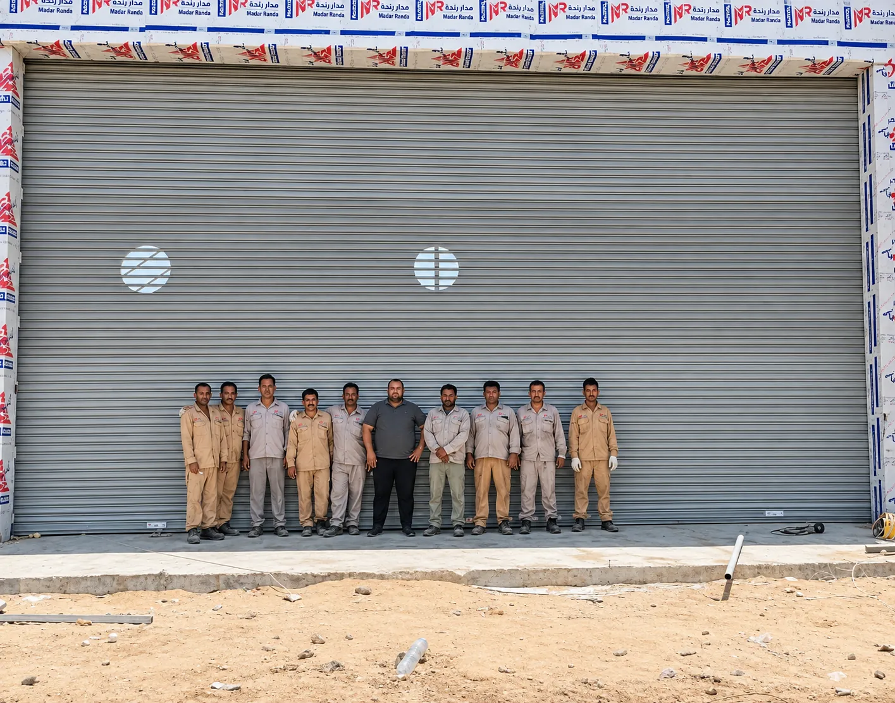

خدمة ما بعد البيع والضمان After-Sales Service & Warranty
خدمة ما بعد البيع والضمان من مدار رندا تستمر معك بعد التركيب: مساعدة في تشغيل المنتج، ومتابعة ملاحظاتك، ومراجعة طلبات الضمان وفق شروط منتجك. جهّز رقم الفاتورة أو بيانات الطلب وتواصل معنا. Madar Randa's after-sales service and warranty continue after installation: help operating your product, follow-up on your feedback, and review of warranty requests according to your product's terms. Have your invoice number or order details ready and contact us.
دعم ومتابعة بعد التركيب Support & Follow-Up After Installation
استفسارات التشغيلOperation Inquiries
مساعدتك في فهم طريقة استخدام المنتج وأنظمة التحكم المتوفرة به.Helping you understand how to use your product and its available control systems.
متابعة الملاحظاتFeedback Follow-Up
استقبال ملاحظاتك بعد التركيب ومراجعتها مع الفريق المختص.Receiving your feedback after installation and reviewing it with the relevant team.
استفسارات الضمانWarranty Inquiries
توضيح تفاصيل ضمان منتجك بالرجوع إلى مستندات الطلب والشروط المعتمدة.Explaining your product's warranty details with reference to the order documents and approved terms.

ضمان منتجك Your Product's Warranty
تختلف مدة الضمان وتغطيته حسب المنتج وشروطه. راجع مستندات الشراء والضمان لمعرفة تفاصيل منتجك، أو تواصل معنا ببيانات الطلب للاستفسار. Warranty duration and coverage vary by product and its terms. Check your purchase and warranty documents for your product's details, or contact us with your order details to inquire.
يراجع الفريق بيانات المنتج وطبيعة المشكلة لتحديد مدى شمول الحالة بالضمان والإجراء المناسب. The team reviews the product details and the nature of the issue to determine whether the case is covered by the warranty and the appropriate action.
طريقة تقديم طلب ضمان How to Submit a Warranty Request
جهّز رقم الفاتورة أو بيانات الطلب.Prepare your invoice number or order details.
أرسل اسمك ورقم التواصل وموقع التركيب.Send your name, contact number and installation location.
وضّح المشكلة وأرفق صورة أو فيديو إن أمكن.Describe the issue and attach a photo or video if possible.
يراجع الفريق طلبك ويتواصل معك لاستكمال التفاصيل وتحديد الخطوة التالية.The team reviews your request and contacts you to complete the details and agree the next step.
الأسئلة الشائعة Frequently Asked Questions
لديك استفسار عن منتجك أو ضمانه؟ Have a Question About Your Product or Its Warranty?
تواصل مع فريق مدار رندا لمساعدتك في التشغيل أو متابعة الملاحظات وطلبات الضمان. Contact the Madar Randa team for help with operation, or to follow up on feedback and warranty requests.